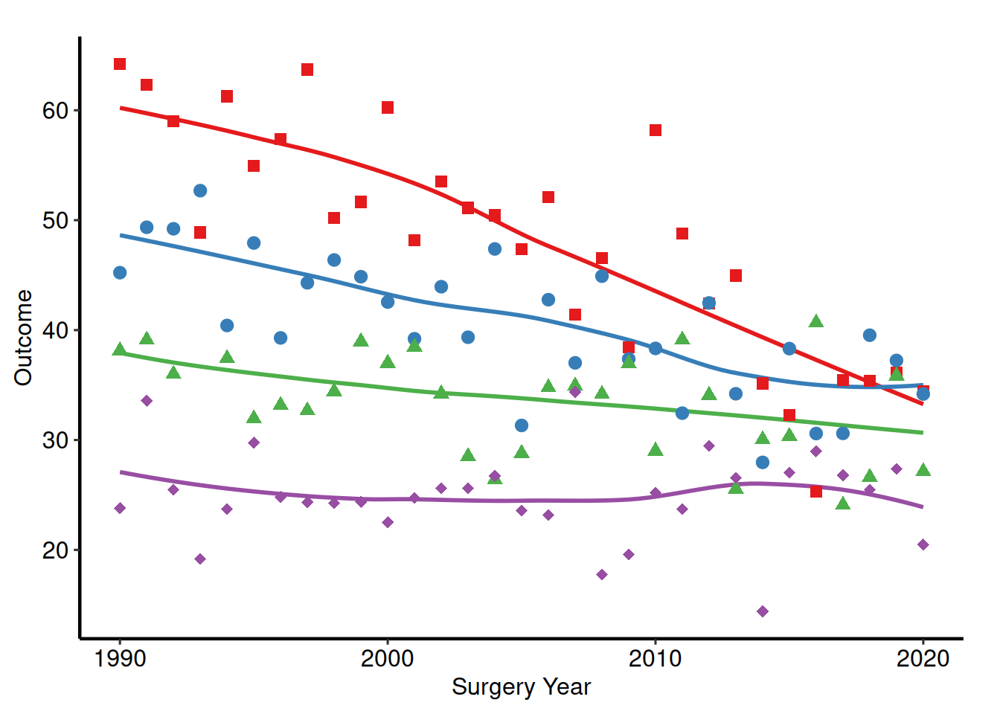
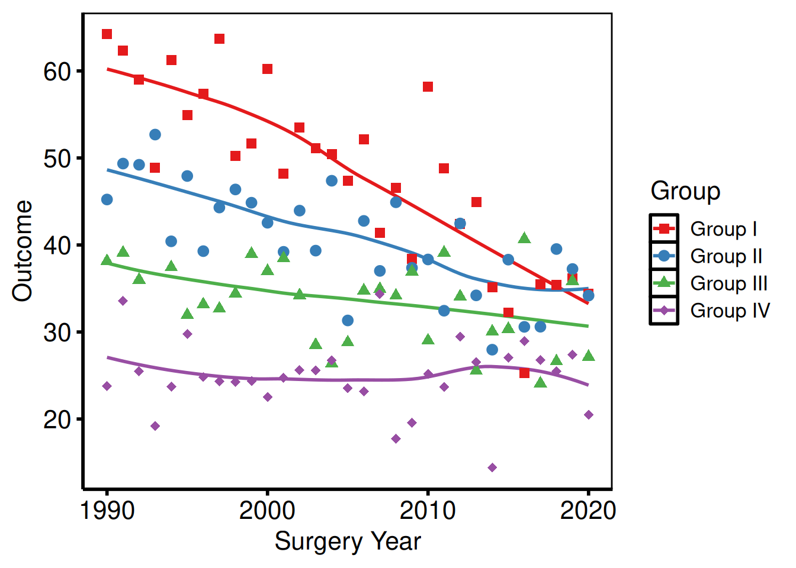
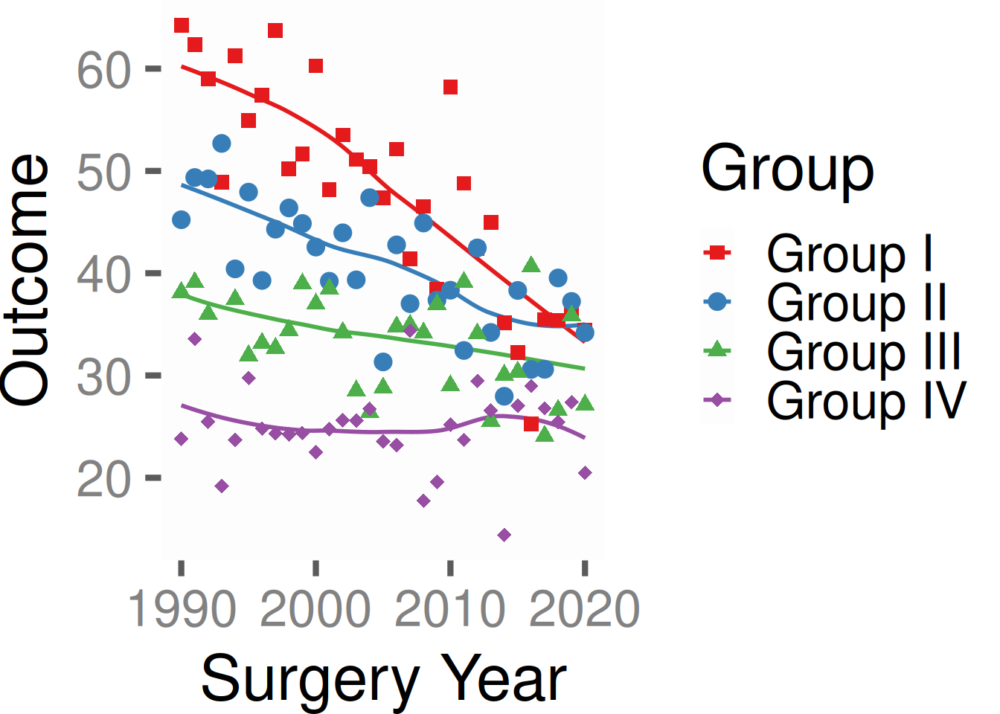
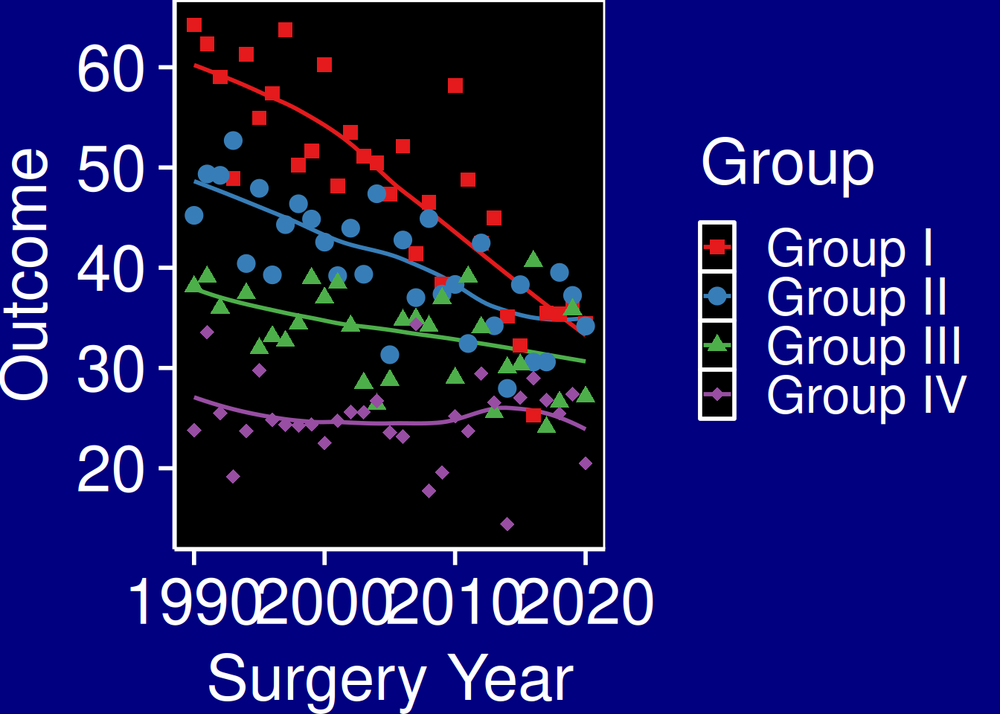
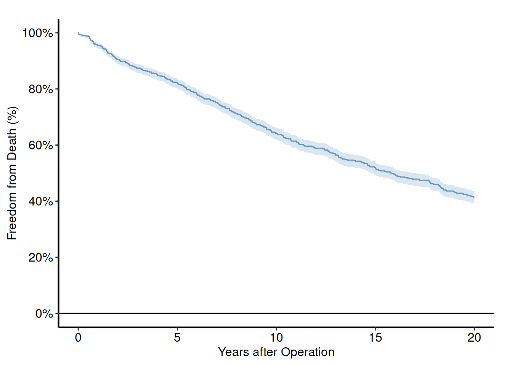
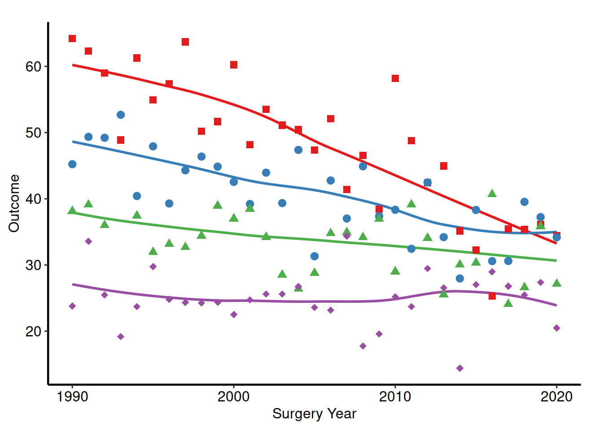
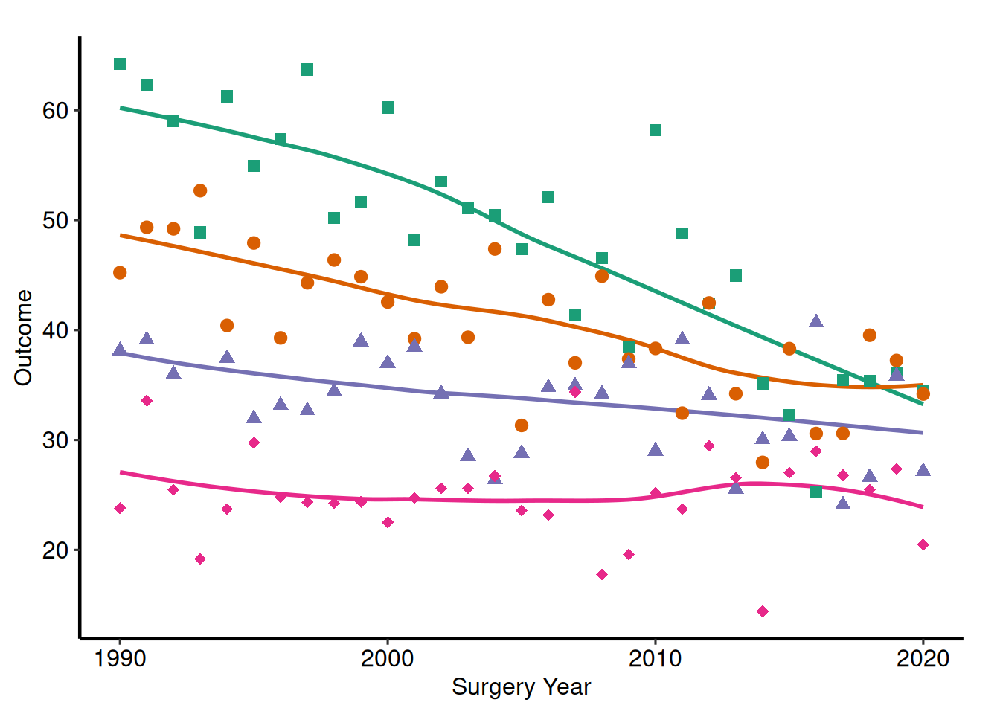
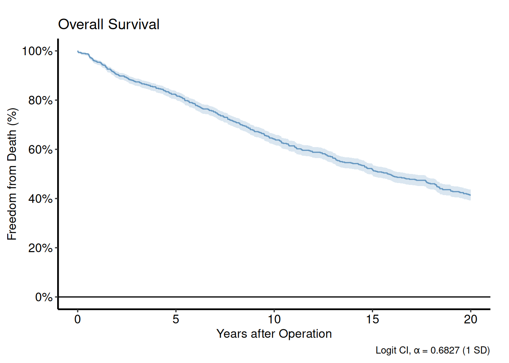
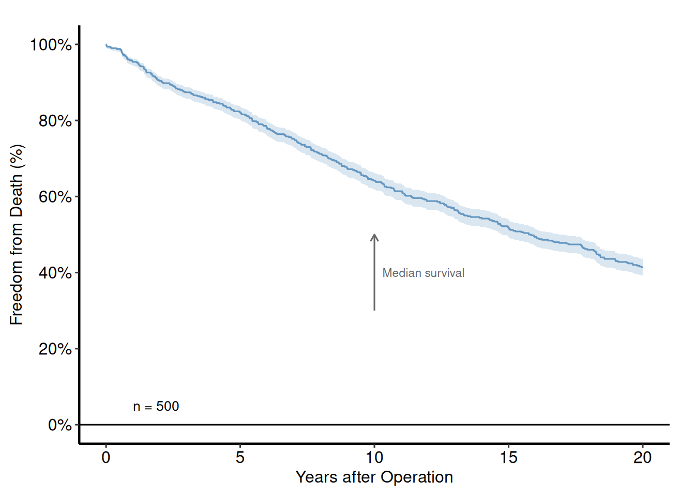
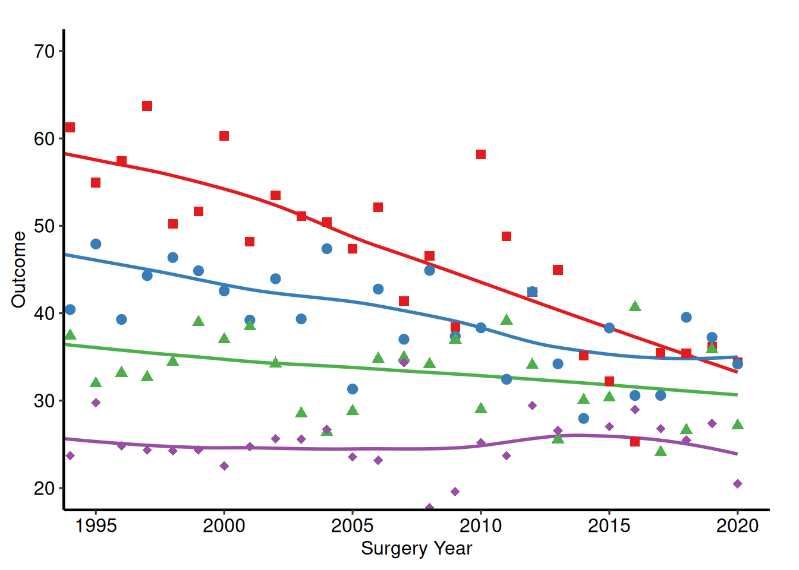

The Composition Pattern
Every hvtiPlotR plot function returns a bare ggplot object — no colour scales, axis labels, or theme are applied. Decoration is added by chaining layers with +:
bare_plot() +
scale_colour_*() + # data colours
scale_fill_*() + # fill colours
labs() + # axis labels, title, caption
annotate() + # text/arrows placed on the panel
coord_cartesian() + # viewport cropping
hvti_theme() # non-data formattingThis vignette demonstrates each decorator in turn, using trends_plot() and survival_curve() as representative base plots.
# Trends data — multi-group continuous outcome over time
dta_trends <- sample_trends_data(n = 600, seed = 42)
p_base <- trends_plot(dta_trends)
# KM data — survival curve
dta_km <- sample_survival_data(n = 500, seed = 42)
km <- survival_curve(dta_km, alpha = 0.8)Themes
The hvtiPlotR package provides four themes via hvti_theme(style). The style argument selects the output target.
| Style | Target |
|---|---|
"manuscript" |
Journal PDF, black-on-white |
"poster" |
Conference poster, slightly larger text |
"light_ppt" |
PowerPoint on white/light background |
"dark_ppt" |
PowerPoint on dark/blue background |
Manuscript
p_base +
scale_colour_brewer(palette = "Set1", name = "Group") +
scale_shape_manual(
values = c("Group I" = 15, "Group II" = 19,
"Group III" = 17, "Group IV" = 18),
name = "Group"
) +
labs(x = "Surgery Year", y = "Outcome") +
hvti_theme("manuscript")
Poster
p_base +
scale_colour_brewer(palette = "Set1", name = "Group") +
scale_shape_manual(
values = c("Group I" = 15, "Group II" = 19,
"Group III" = 17, "Group IV" = 18),
name = "Group"
) +
labs(x = "Surgery Year", y = "Outcome") +
hvti_theme("poster")
Light PowerPoint
p_base +
scale_colour_brewer(palette = "Set1", name = "Group") +
scale_shape_manual(
values = c("Group I" = 15, "Group II" = 19,
"Group III" = 17, "Group IV" = 18),
name = "Group"
) +
labs(x = "Surgery Year", y = "Outcome") +
hvti_theme("light_ppt")
Dark PowerPoint
p_base +
scale_colour_brewer(palette = "Set1", name = "Group") +
scale_shape_manual(
values = c("Group I" = 15, "Group II" = 19,
"Group III" = 17, "Group IV" = 18),
name = "Group"
) +
labs(x = "Surgery Year", y = "Outcome") +
hvti_theme("dark_ppt") +
theme(plot.background = element_rect(fill = "navy", colour = "navy"))
Colour Scales
scale_colour_* controls line and point colours; scale_fill_* controls filled areas (ribbons, bars). Both share the same name (legend title) and guide (legend display) arguments.
Manual colours
Use scale_colour_manual() when assigning specific brand or convention colours to known levels.
km$survival_plot +
scale_color_manual(values = c(All = "steelblue"), guide = "none") +
scale_fill_manual(values = c(All = "steelblue"), guide = "none") +
scale_y_continuous(breaks = seq(0, 100, 20),
labels = function(x) paste0(x, "%")) +
scale_x_continuous(breaks = seq(0, 20, 5)) +
coord_cartesian(xlim = c(0, 20), ylim = c(0, 100)) +
labs(x = "Years after Operation", y = "Freedom from Death (%)") +
hvti_theme("manuscript")
ColorBrewer palettes
scale_colour_brewer() applies a ColorBrewer palette — safe, perceptually uniform, and print-friendly. Use palette = "Set1" for categorical data, "RdYlGn" for diverging, "Blues" for sequential.
p_base +
scale_colour_brewer(palette = "Set1", name = "Group") +
scale_shape_manual(
values = c("Group I" = 15, "Group II" = 19,
"Group III" = 17, "Group IV" = 18),
name = "Group"
) +
labs(x = "Surgery Year", y = "Outcome") +
hvti_theme("manuscript")
Suppressing legends
Pass guide = "none" to any scale to remove its legend entry. Use this when colour is self-evident from axis labels or annotations.
p_base +
scale_colour_brewer(palette = "Dark2", guide = "none") +
scale_shape_manual(
values = c("Group I" = 15, "Group II" = 19,
"Group III" = 17, "Group IV" = 18),
guide = "none"
) +
labs(x = "Surgery Year", y = "Outcome") +
hvti_theme("manuscript")
Labels and Annotations
labs()
labs() sets the axis, legend, title, subtitle, and caption text. Set axis labels here rather than inside the plot function so they can be overridden per project.
km$survival_plot +
scale_color_manual(values = c(All = "steelblue"), guide = "none") +
scale_fill_manual(values = c(All = "steelblue"), guide = "none") +
scale_y_continuous(breaks = seq(0, 100, 20),
labels = function(x) paste0(x, "%")) +
scale_x_continuous(breaks = seq(0, 20, 5)) +
coord_cartesian(xlim = c(0, 20), ylim = c(0, 100)) +
labs(
title = "Overall Survival",
x = "Years after Operation",
y = "Freedom from Death (%)",
caption = "Logit CI, \u03b1 = 0.6827 (1 SD)"
) +
hvti_theme("manuscript")
annotate()
annotate() places text, segments, or rectangles at fixed data coordinates. Use it for sample size callouts, phase labels, or directional arrows.
km$survival_plot +
scale_color_manual(values = c(All = "steelblue"), guide = "none") +
scale_fill_manual(values = c(All = "steelblue"), guide = "none") +
scale_y_continuous(breaks = seq(0, 100, 20),
labels = function(x) paste0(x, "%")) +
scale_x_continuous(breaks = seq(0, 20, 5)) +
coord_cartesian(xlim = c(0, 20), ylim = c(0, 100)) +
labs(x = "Years after Operation", y = "Freedom from Death (%)") +
annotate("text", x = 1, y = 5,
label = paste0("n = ", nrow(dta_km)),
hjust = 0, size = 3.5) +
annotate("segment", x = 10, xend = 10, y = 30, yend = 50,
arrow = arrow(length = unit(0.2, "cm")), colour = "grey40") +
annotate("text", x = 10.3, y = 40,
label = "Median survival", hjust = 0, size = 3, colour = "grey40") +
hvti_theme("manuscript")
coord_cartesian()
coord_cartesian() crops the viewport without dropping data, preserving LOESS fits computed on the full range.
p_base +
scale_colour_brewer(palette = "Set1", name = "Group") +
scale_shape_manual(
values = c("Group I" = 15, "Group II" = 19,
"Group III" = 17, "Group IV" = 18),
name = "Group"
) +
labs(x = "Surgery Year", y = "Outcome") +
coord_cartesian(xlim = c(1995, 2020), ylim = c(20, 70)) +
hvti_theme("manuscript")
Saving Figures
Manuscript PDF
Use ggsave() with width = 11, height = 8.5 (US Letter landscape) for manuscript figures. Assign the fully composed plot to a variable first so the same object is both displayed in the session and written to disk.
p_ms <- p_base +
scale_colour_brewer(palette = "Set1", name = "Group") +
scale_shape_manual(
values = c("Group I" = 15, "Group II" = 19,
"Group III" = 17, "Group IV" = 18),
name = "Group"
) +
labs(x = "Surgery Year", y = "Outcome (%)") +
hvti_theme("manuscript")
ggsave(
filename = "../graphs/trends_manuscript.pdf",
plot = p_ms,
width = 11,
height = 8.5
)Poster PDF
Poster figures are typically larger and use hvti_theme("poster"). Adjust dimensions to match the poster panel size.
p_poster <- p_base +
scale_colour_brewer(palette = "Set1", name = "Group") +
scale_shape_manual(
values = c("Group I" = 15, "Group II" = 19,
"Group III" = 17, "Group IV" = 18),
name = "Group"
) +
labs(x = "Surgery Year", y = "Outcome (%)") +
hvti_theme("poster")
ggsave(
filename = "../graphs/trends_poster.pdf",
plot = p_poster,
width = 14,
height = 10
)PowerPoint slides
save_ppt() from the hvtiPlotR package inserts a ggplot object into a PowerPoint file as an editable vector graphic (via the officer and rvg packages). Apply hvti_theme("dark_ppt") or hvti_theme("light_ppt") before saving.
p_ppt <- p_base +
scale_colour_brewer(palette = "Set1", name = "Group") +
scale_shape_manual(
values = c("Group I" = 15, "Group II" = 19,
"Group III" = 17, "Group IV" = 18),
name = "Group"
) +
labs(x = "Surgery Year", y = "Outcome (%)") +
hvti_theme("dark_ppt")
save_ppt(
plot = p_ppt,
filename = "../graphs/trends_slides.pptx",
width = 10,
height = 7.5
)Multi-panel PDF (EDA batch output)
When generating multiple plots in a loop, gridExtra::marrangeGrob() arranges them into a grid and ggsave() writes each page.
# Build a list of plots (e.g. from an eda_plot() lapply loop)
plot_list <- lapply(
c("ef", "lv_mass", "peak_grad"),
function(yv) {
dta_eda <- sample_eda_data()
eda_plot(dta_eda, x_col = "op_years", y_col = yv,
y_label = yv) +
scale_colour_manual(values = c("steelblue"), guide = "none") +
labs(x = "Years") +
hvti_theme("manuscript")
}
)
per_page <- 9L
for (pg in seq(1, length(plot_list), by = per_page)) {
idx <- seq(pg, min(pg + per_page - 1L, length(plot_list)))
grob <- gridExtra::marrangeGrob(plot_list[idx], nrow = 3, ncol = 3)
ggsave(
filename = sprintf("../graphs/eda_page%02d.pdf", ceiling(pg / per_page)),
plot = grob,
width = 14,
height = 14
)
}